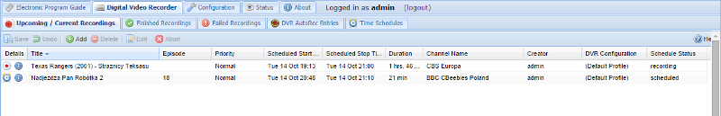
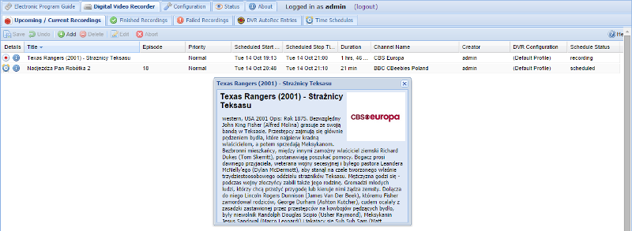

Digital Video Recorder - Upcoming/Current Recordings
This tab show your all upcoming/current recordings.

Buttons
The buttons have the following functions:
Add : Add and configure a recording event by hand as opposed to choosing something from the EPG. This is useful if you wish to record something that isn’t yet in the EPG, or record at a particular time that perhaps spans several EPG events.
Delete : If clicked delete selected upcoming/current recordings you delete recordings. Before deleted show message: Do you really want to delete the selection ? Answer Yes or No.
Abort : Abort an already-underway recording. Note that this does not remove the (partial) recording file from disk.
Edit : Manually edit an already-scheduled recording event. This uses the same fields as Add, but they’re obviously pre-populated with their current values.
Save : Saves any changes made to the recording list.
Undo : Undoes any changes made to the recording list.
Columns
The columns have the following functions. Icons are:
Details : Shows the status of the recording event:
-
Clock - the recording is scheduled (upcoming).
-
Record symbol (red circle) - the recording is active and underway (current).
-
Info - displays detailed information about the selected recording (upcoming or current).
EDITOR’S NOTE: INSERT LINKS TO ICON PNGS

Title : The title (name) of the recording. While this is copied from the EPG when you create a recording, it’s not used to match the event itself and is thus used here as the name of the event (see also: adding an event manually with the Add button).
Episode : The episode number of the recording (whether this is available depends on your broadcaster and/or EPG data source).
Priority : The priority of the recording: Not set, Important, High, Normal, Low, Unimportant. If there is a clash, more important recordings will take priority over less important ones.
Scheduled Start Time :The date and time when the scheduled recording will start. Note that this includes any extra time defined in the recording profile (e.g. “start two minutes earlier than the EPG start time”).
Scheduled Stop Time : The date and time when the scheduled recording will stop. Note that this includes any extra time defined in the recording profile (e.g. “finish recording five minutes after the EPG stop time”).
Duration : The total duration of the scheduled recording, including any extra time before or after.
Channel Name : The channel to be recorded.
Creator : The user who created the recording or the auto-recording source and IP address if scheduled by a matching rule.
DVR Configuration : The DVR configuration to be used for this recording.
Schedule Status : The status of the recording (scheduled or recording).